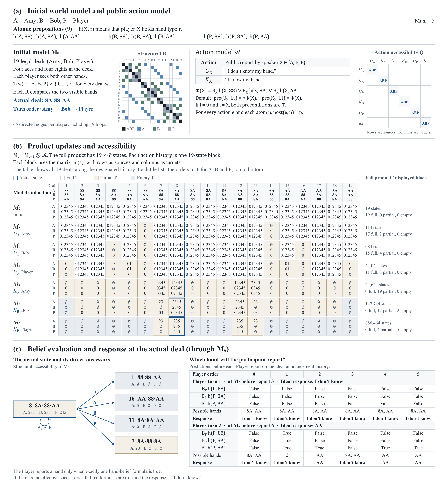
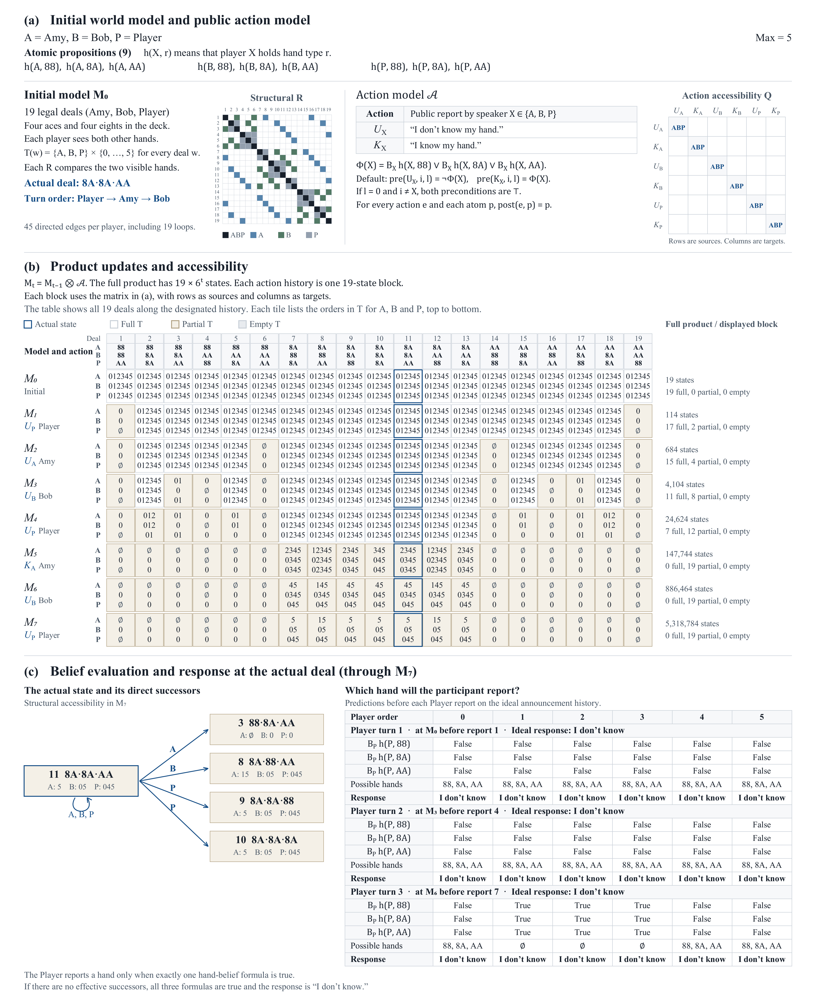

两组牌面的 ToMfa 模型
两组牌面在 ToMfa 模型下的逐步更新和回答结果。牌面按 Amy、Bob、Player 排列。
8A · 88 · AA
宣告顺序为 Amy → Bob → Player

8A · 8A · AA
宣告顺序为 Player → Amy → Bob

两组牌面在 ToMfa 模型下的逐步更新和回答结果。牌面按 Amy、Bob、Player 排列。
宣告顺序为 Amy → Bob → Player

宣告顺序为 Player → Amy → Bob
